The System Variable control enables System Variables to be displayed on a Form. The System Variable's text representation (e.g., {CURR_DATE}) will be replaced by the actual value of the specified system variable when the form is displayed to the user. This control can be used to return the value of any evaluable system variable when the form is displayed at run-time.
In addition, this control can be used to encapsulate a Form control tag by placing the tag syntax in the System Variable property box (e.g., {DateTime:ControlName, Interval=15, StartTime="09:00 AM", EndTime="05:00 PM"}), since Form control tags are just System Variables that have a graphical representation.
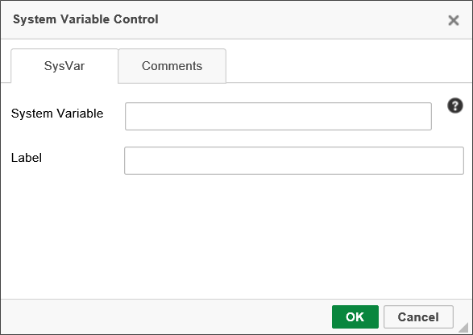
The System Variable property accepts the syntax of the system variable, complete with Curly Brackets, e.g., {CURR_USER}.
The Label property is the text of the placeholder label that will appear when you place the control on the Form page.
The Label control adds a piece of text to the Form that can be dynamically changed by accessing it via the control name.
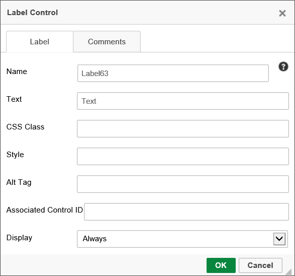
The following properties are configurable:
Name: The name of the control.
Text: The text that will be displayed to Form users.
CSS Class: The name of the CSS class, if any, that exist in a custom CSS stylesheet for the Form.
Style: A text box into which you can configure a style for the control, using regular CSS syntax.
Associated Control ID: The Name of the input control to which this Label is associated for accessibility compliance.
Display: A dropdown that enables you to configure the viewports for which the Label should display. The available options are:
 Labels used for accessibility purposes must use the Associated Control ID property to specify the Name property of the data entry control that should be associated with the Label. At run-time, the Label will be associated with the specified data entry control for accessibility compliance.
Labels used for accessibility purposes must use the Associated Control ID property to specify the Name property of the data entry control that should be associated with the Label. At run-time, the Label will be associated with the specified data entry control for accessibility compliance.
The Routing Slip shows the path that a Form has taken through a process. An optional signature image file can be associated with a User ID causing it to be displayed next to their name in the Routing Slip when they complete their task. You can upload a signature for each user in the User Administration section of the system. It is recommended that a GIF or PNG file be used with a transparent background so the image can be displayed on web pages with different color backgrounds. If a signature file is found, it is automatically displayed anytime the Routing Slip is viewed. Below is an example of how an actual Routing Slip will appear on a working form.
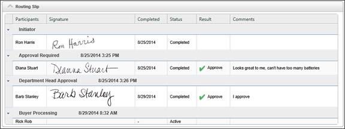
To add a user’s signature to the database, see the User Administration documentation. At design time, the Routing Slip will be represented as an image of a sample Routing Slip when you are building the Form.
When an Activity/Step is completed by an automated result condition based on "First Result Met", the Routing Slip will include that result name in for each of the users that did not complete the task. It will still identify them as being not required to complete the Activity/Step, but the result will be indicated.
There are two primary configuration tabs for the Routing Slip.
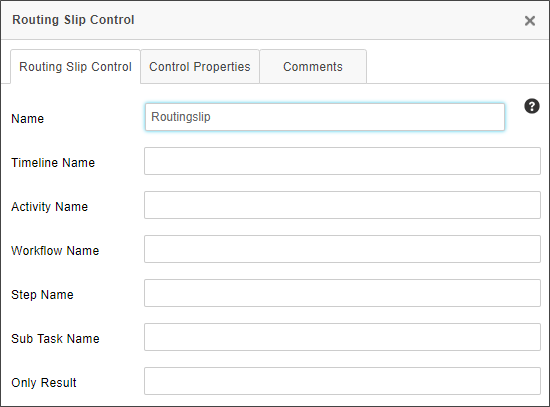
The following properties are available for configuration on this tab.
Name: The name of the control. This property must conform to the regular naming conventions for any Form field.
Timeline Name: Entering the name of a Process Timeline in this property will restrict the results to the specified Process Timeline.
Activity Name: Entering the name of a Process Timeline Activity in this property will restrict the results to the specified Activity.
Workflow Name: Entering the name of a Workflow in this property will restrict the results to the specified Workflow.
Sub Task Name: Entering the name of a SubTask in this property will restrict the results to the specified Sub Task. Sub Task names are configured in the properties for User Timeline Activity types.
Only Result: If you specify text in the Only Result textbox, then only steps whose results match the specified text will display on the Routing Slip.
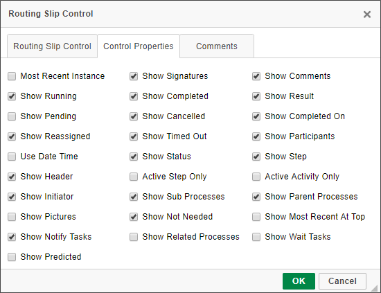
A Routing Slip can be configured to show a number of different information fields, all of which can be configured on this tab. The default configuration is shown above. For most use cases, the default configuration displays what you'd like to see, so changing the default configuration will probably be fairly rare. The following properties may be configured.
For Process Director v5.26 and higher, delegation that occurs from a disabled user will be noted on the Routing Slip, in addition to the normal delegation information.
Most Recent Instance: Generally only applicable to processes that use iterative steps, checking this property will display only the most recent iteration's results. The default behavior is to show ALL iteration results.
Show Running: Checking the box will display the currently running activities in the Routing Slip.
Show Pending: Checking the box will display the currently Pending activities in the Routing Slip.
Show Reassigned: Checking the box will display any task reassignments in the Routing Slip.
Use Date Time: Checking the box will display the time an event occurred, in addition to the date.
Show Header: Checking the box will display the Routing Slip header.
Show Initiator: Checking the box will display the name of the Process Initiator.
Show Pictures: Checking the box will display the pictures of the participating users. This will, of course, require that the users have a picture image uploaded to their user account in Process Director.
Show Notify Tasks: Checking the box will display any notification tasks, in addition to the user tasks that display be default.
Show Predicted: Checking the box will display the predicted path the process will take. For processes that rely on ad hoc decisions for task assignments or branching, this may not be reliably accurate, for obvious reasons. For more formalized process structures however, this property will enable the Routing Slip to show the predicted paths and predicted start dates of the subsequent activities, based on the past performance of the process.
Show Signatures: Checking the box will display the signature images of the participating users. This will, of course, require that the users have a signature image uploaded to their user account in Process Director.
Show Completed: Checking the box will display all completed activities.
Show Canceled: Checking the box will display all canceled activities.
Show Timed Out: Checking the box will display all activities that were ended by timing out.
Show Status: Checking the box will display the current status of all activities.
Active Step Only: Checking the box will display only information about the currently active Workflow Step.
Show Sub Processes: Checking the box will display the activities for any subprocesses to which the current process is the parent process.
Show Not Needed: Checking the box will display all activities that were skipped as "Not Needed".
Show Related Processes: Checking the box will display activities for any process that is called by the current process, and which has run, or is running, asynchronously.
Show Comments: Checking the box will display all completion comments for the activities.
Show Result: Checking the box will display all Activity results.
Show Completed On: Checking the box will display the completion date for all completed activities.
Show Participants: Checking the box will display all Activity participants.
Show Step: Checking the box will display all Workflow Steps.
Active Activity Only: Checking the box will display only the currently active Timeline Activities.
Show Parent Processes: Checking the box will display all activities for the process which called the current process as a subprocess.
Show Most Recent At Top: Checking the box will order the activities from the most recently completed to the oldest completed Activity. This is the reverse of the normal order.
Show Wait Tasks: Checking the box will display all Wait tasks, in addition to the User activities.
The HTML Code control allows you to insert an HTML code snippet into the Form definition. You can include System Variables in the code snippet, and Process Director will parse them properly. The control has a character limit of 5,500 characters, so if you have a lengthy HTML snippet, you should break it up across multiple HTML controls to ensure that you don't exceed the character limit.
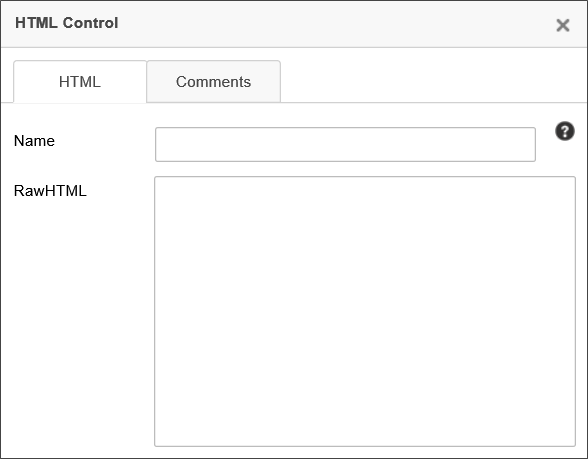
 If your inserted HTML includes { or } characters, such as used in JavaScript code, you must leave the control's Name property blank. Otherwise the "{" and "}" characters will be interpreted as System Variables.
If your inserted HTML includes { or } characters, such as used in JavaScript code, you must leave the control's Name property blank. Otherwise the "{" and "}" characters will be interpreted as System Variables.
In addition to normal HTML, you can include JavaScript. So, to send an alert that greets the user, you could say:
<script>
Alert(“Hello {CURR_USER}”);
</script>
If you create a JavaScript function called “bpUserJavaScript” and put it on the form inside an HTML control - it will run on the initial Form Load and all Postback events, enabling you to insert JavaScript into these events.
<script>
function bpUserJavaScript()
{
//Script code for Load and Postback goes here.
}
</script>
This feature enables you to insert complicated client-side JavaScript that sets a control's state on Postback. In the example below, a notional Form has a Checkbox control that is set as en event field to fire the Postback. On Postback, the bpUserJavaScript function runs to control the state of the Checkbox .
<script>
var SaveClick;
function bpUserJavaScript()
{
SaveClick = CurrentForm.FormControls["CheckBox2"].onclick;
CurrentForm.FormControls["CheckBox2"].onclick = NewClick;
}
function NewClick()
{
if (confirm("Are you sure?"))
{
if (typeof(SaveClick) != "undefined" && SaveClick)
{
SaveClick();
}
}
else
{
CurrentForm.FormControls["CheckBox2"].checked =
!CurrentForm.FormControls["CheckBox2"].checked;
}
}
</script>
You can also place ASP.NET server –side controls in this tag. For example:
<asp:TextBox runat=”server” ID=”bpLogixTextBox” />
Server-side ASP.NET controls also act as normal BP Logix form fields, allowing you to reference them with System Variables and through Process Director. You can place an HTML control on a Form, leave the Name property blank, then place the ASP.NET control markup in the HTMLString Property. Entering a Name for the HTML control will cause Process Director to treat it like a Process Director Control and override the ASP.NET control. Leaving the Name property blank will cause Process Director to take the HTML markup for the ASP.NET control, and display the ASP.NET control in the Form. By wrapping a native ASP.NET control in an unnamed HTML control, Process Director supports the use of any native ASP.NET control on a Form.
You can stylize your HTML with CSS, either in the tag you want to stylize or in a separate <style> tag.
<!-- You can do this: -->
<p style="text-align: center;">Text</p>
<!-- Or this: -->
<style type="text/css">
p{
text-align: center;
}
</style>
To use the ASP.NET controls, you must have Process Director v3.5 or higher.
This control enables you to display a Knowledge View within a Form, or within a popup window.
The Properties dialog enables you to configure the Name of the control, as well the HTML text that should be displayed to the user at the top of the Knowledge View, if any. The HTML Width/Height use HTML measurements, usually percentages or pixels, to define the size of the control. The Type property can be set to "Iframe" or "Pop-Up". If displayed as an HTML Iframe, the Knowledge View will display inline on the Form. If displayed as a Pop-Up, the Knowledge View will be displayed in a pop-up window. You can also send QueryString Parms, i.e., query string parameters, to the Knowledge View, with each parameter on its own line in the text box.
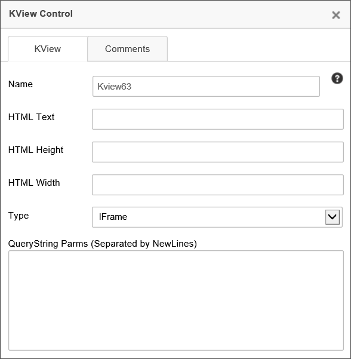
To specify which Knowledge View this control will display, you must configure this control's property on the Form Controls tab of the Form Definition by setting the Default Value of this control to the content item for the Knowledge View you want displayed.
QueryString Parameters can also be set in the QueryString Parms property, as described in the KView control tag section of this document.

The Hotlink control creates a link to a specified URL. These are often placed in emails to link users to the task they need to complete. As such, one will usually set the Hotlink’s URL dynamically using System Variables, e.g., {EMAIL_URL}.

The following properties are configurable:
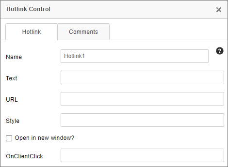
The Name is the name of the control.
The Text property sets the text displayed on the form.
The URL property sets the URL to which the hotlink control will link.
The Style property determines CSS styling for the link.
The Open in new window checkbox will, when checked, force the link to open in a new browser tab/window.
The OnClientClick property specifies the name of a JavaScript subroutine to be executed when the user clicks on the link. It must be encased in quotation marks.
A built-in CKEditor control, the Link control (documentation) offers additional functionality, and may serve as a better control for some use cases.
This control inserts an image from a specified URL into the Form.
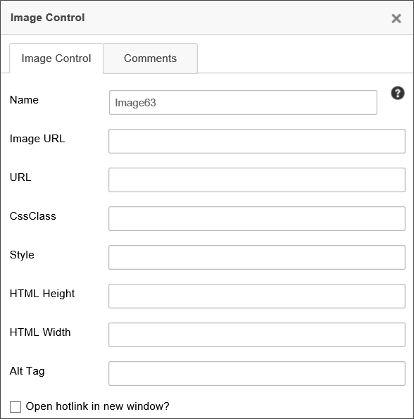
The Image URL field specifies the URL at which the image can be found. If text is entered in the URL field, the image will redirect the user to that URL if the image is clicked on. You can check the checkbox to open the link in a new window. For use of QR Codes, the Image URL property will accept the QR Code system variable to generate the QR code automatically as the image for this control.
The image can also be stylized using CSS, with the CSS Class property specifying the name of a CSS class that exists in a custom CSS stylesheet, and the Style property containing CSS style directives for solely this control. The HTML Height and Width can be set in pixels/Percent.
For accessibility, all Image controls should configure the Alt Tag text to be displayed if the image isn't available, or for users of assistive devices.
For images that use the URL property to specify a link to open when the image is clicked, the Open hotlink in new window checkbox will, when checked, force the link to open in a new browser tab/window.
A built-in CKEditor control, the Image tool (documentation) offers additional functionality, and may serve as a better control for some use cases. This tool will not work with the QR Code system variable.
The Calculation control displays a number that is the result of a calculation involving any combination of the values of Form controls, constants, and the multiplication, division, addition, and subtraction operators (“*”, “/”, “+”, and “-“ respectively).
In the Online Form Designer, the calculate control will appear as a small calculator icon.

At run-time, only the calculation's result will be displayed to the Form user.
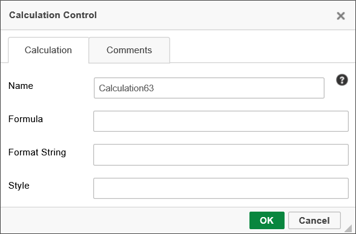
Name: The name of the control.
Formula: The mathematical formula that produces the calculation.
Format String: The built-in .NET Format String used to format the result. For the syntax of the available .NET Format Strings, please refer to Microsoft's MSDN documentation topic for Standard Numeric Format Strings.
Style: CSS style tags to format the control, e.g., "font-weight: bold;"
The algorithm used in the calculation can incorporate system variables, and usually Form field system variables are used for calculations. For example, to add the value of two form fields, use the following equation, substituting the appropriate control names:
{FORM:fieldA} + {FORM:fieldB}
The alternate Form field system variable syntax will also work as expected, e.g.:
{:fieldA} + {:fieldB}
In addition, system variable encoding symbols, such as the numeric designator, can also be used, e.g.:
{#:fieldA} + {#:fieldB}
The Date Difference control displays the number of days, hours, minutes, etc., between two dates.
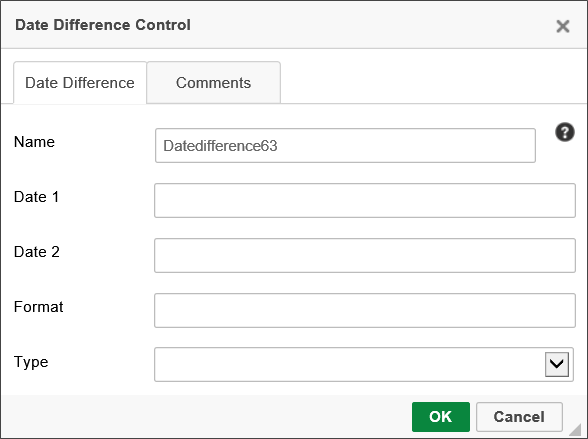
There are three attributes that must be provided to enable the control to display the proper value in the Form:
Additionally, the Format property will accept any valid .NET formatter to change the display of the result to the specified format.
By default, the Date Difference control will display a simple text number reflecting the value of the date difference in the selected Type increments.
The Lock Form control is used when a form may be opened by more than one user at a time. This control ensures that, when one user opens the form, it is locked so that, if a second user opens the form, the second user can't edit the form until the first user has completed editing. Instead, the second user receives a dialog box notifying them that the form has already been opened for editing by another user. In the Online Form Designer, the control will appear as a padlock icon.

The Lock Form control enables the user to see whether a form is locked and, if the control is configured to allow it by checking the Allow user to unlock form checkbox, to unlock it.
The properties window of the control enables you to set the Lock Text shown to the user when the form is locked. To put the name of the user who locked the control into the Lock Text, use the {FORM_LOCK_USER} system variable.
In most cases, the Form will remain locked until the locking user closes it via the use of the Submit, Cancel, or a task result button. The control can also be configured to periodically check to see whether the form has been locked after the number of seconds specified in the Polling Seconds property, by checking the Use Polling to detect when the form is unlocked checkbox. Checking the box requires that you specify the desired number of seconds in the Polling Seconds property. Forms that are closed without the use of a system button can be polled to determine if the Form is still open and, if not, can be unlocked after the appropriate poll result is received.
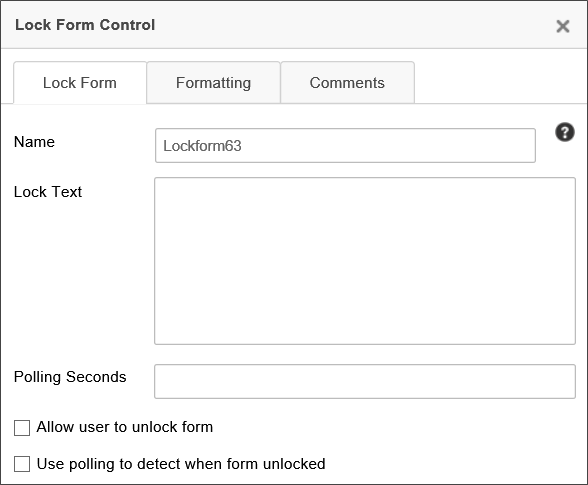
Use of the Scheduler control has largely been deprecated in the product. BP Logix recommends using the Goal object for most scheduled operations that were formerly implemented via the Scheduler.
The Scheduler control is part of the Process Director Scheduler Module (PDSM), which is used to launch processes at pre-defined intervals within a specified window of time.

Complete details about the scheduler component are available through the Scheduler Module guide.
The Audit control enables the user to view a history of the controls whose values have changed on the Form, when the Audit Form Changes checkbox is checked on the Form definition's Properties tab.
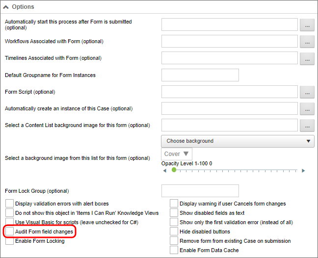
The Audit control’s properties can be configured as follows:
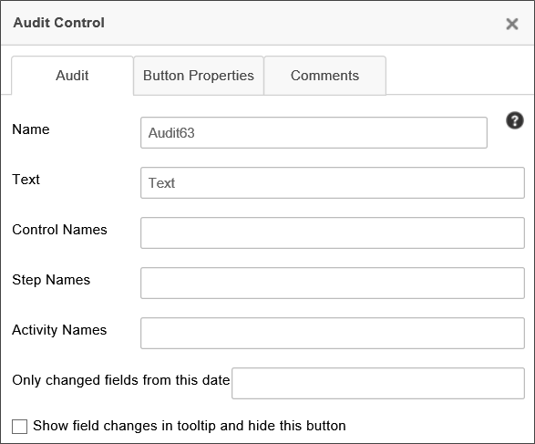
You can configure the control’s Name, and the Text displayed on the audit button.
Using the Control Name, Step Name, and Activity Name fields, you can filter the audit history to display only Form changes relevant to the specified controls, activities, and steps. For instance, if you set the Activity Name property to "Step 1", then only auditable activities that occur during the Activity named "Step 1" will appear in the control at run-time. These three fields can accept multiple values by entering a comma-separated list of items. You can also set any of these field properties to a System Variable, instead of manually adding values to these fields. As an example, you can use a Business Rule to provide these values, and enter the System variable name for a Business Rule in each field, e.g., {RULE:BusinessRuleName}. You could then set the Business Rule to return the step completion date, so that you only capture changes made after that point in the process. Using a Business Rule enables you to change the filter values by editing the Business Rule, instead of re-opening the Form template and modifying the template.
If you check the Show field changes in tooltip... check box, the Audit control button won't be displayed at run-time. Instead, audit information will be displayed in a tooltip for the Form fields when the user hovers the mouse over the relevant fields.
The Show Report control displays a report in a Form. The Show Report control can display a report in a variety of ways, configurable in the control’s properties.

The properties window allows the user to configure the Name of the control, the Text the Show Report button displays, and the HTML Height/Width of the report, using HTML measurements, i.e., pixels or percentages. It also enables the user to pass QueryString Parms (parameters) to the report, configuring the data it returns. Separate parameters should be separated by new lines, using the [variable name] = [value] format to specify parameters and their values.
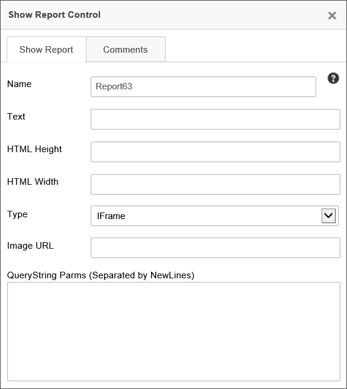
The Type dropdown allows the report to be displayed in the Form in three different ways. The report can be displayed in an IFrame in the Form, as a popup, or as an image embedded in the Form by setting the Type property. The image is static, but the data it returns can still be configured using QueryString parameters.
The Email Data control is used in a email notification template to specify the configuration of the email that is sent via task notifications. In addition to the Name property that is common to all controls, the properties for this control are configured on the interface tabs shown below.
For users of Process Director v5.27 and higher, Process Director enables the use of address strings with a Display Name component (e.g. "Test User <test@example.com>").

|
PROPERTY |
DESCRIPTION |
|---|---|
|
Subject |
Subject for email |
|
From Email |
The email address from whom the email is sent. Usually, this property is configured only when you wish to use a specific email address for this specific control. In most cases, you won't configure this property. By default, notification email "From" addresses will be set by the first value that isn't empty from the following list:
|
|
From Display |
When configuring a From Email address, this property enables you to specify a display name for the email address, e.g., the name of a person, instead of the email address alone. |
|
Group Name |
Only attach documents in the specified attachment group or groups. If you don’t specify the Group Name of objects to include in the email, it will send all attachments to the email recipient. Multiple groups can be added in a comma-separated list, e.g., "Group1, Group2, Group3". |
| Locale |
An optional string property that accepts a valid .NET locale string, e.g., "en-US" for US English. This value can also be passed through a form field variable, e.g., Normally when an email is sent, it will set the locale to that of the target user. If the user is an anonymous user, the locale will be set to the default locale of the server. If the locale is specified in this property, however, the default behavior will be overridden by this property setting. |
|
CC Email |
A list of comma separated or semi-colon separated email address that will be CC'd on the email. |
|
BCC Email |
A list of comma separated or semi-colon separated email addresses that will be BCC'd on the email. |
|
Priority |
Sets the priority of the email. Supports the following values:
|
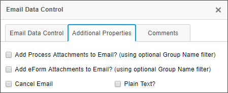
|
PROPERTY |
DESCRIPTION |
OPTION |
|---|---|---|
|
Add Process Attachments to Email |
When checked, this property enables you to send Process attachments as attachments in the email. You can specify what attachments to send by using the Group Name property, as mentioned above. |
Group Name |
|
Add Form Attachments to Email |
When checked, this property enables you to send Form attachments as an attachments in the email. You can specify what attachments to send by using the Group Name property, as mentioned above. |
Group Name |
|
Cancel Email |
Check this box when an email doesn't need to be sent out, based on a condition. |
|
|
Plain Text |
Checking the property will strip the email of HTML information and transmit it using plain text. This is used sometimes to make emails more legible on PDAs or other operating systems that receive email from Exchange servers, but which can't parse HTML emails. |
|
For information on this control's usage in an email template, see the EmailData Control section of the Email Templates documentation.
The Tooltip control will place an icon on the Form page that, when moused over, will display text that you configure in the settings for the control.
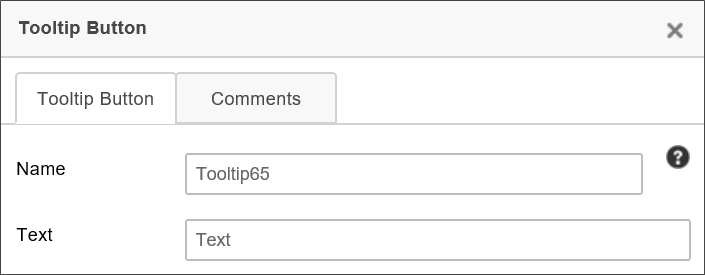
The text you place in theText property will appear as a tooltip when the user places the mouse over the tooltip icon () that appears on the page.
This topic discusses a feature that is under active development, and is subject to change without notice.
This control will place a Pathfinder button on the Form Page. This control is part of the AI-driven Pathfinder feature in Process Director v6.1.500 and higher.
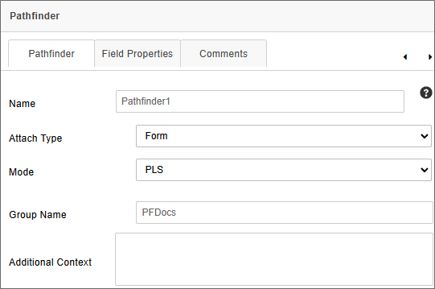
This control will add all documents in a specified attachment group to the AI context. At run-time, the control will appear as a button control labeled Open Pathfinder. Clicking the button will open the Pathfinder chatbot to enable you to ask the Pathfinder feature to analyze the document for various purposes, such as asking for a Plain-Language Summary of the document.
The Mode property enables you to select one of three modes for Pathfinder's operation in the Form. There are three modes you can select.
Standard: This mode opens the pathfinder chatbot panel, and enables users to ask the chatbot questions.
PLS: This mode enables you to upload a document, or select an uploaded document, to provide a Plain-Language Summary (PLS) of the document's contents. When you select a document to generate a PLS, a preview of the PLS will be displayed for approval. A save icon will save the PLS as a document attachment in the group specified.
IntAIk: This mode enables you to provide a PLS for an existing, uploaded document, as well as to extract contents from the document to place into form fields on the Form. Only one document may be selected in this mode. If multiple document uploads exist, you must select a single document for use in this mode.
When IntAIk has been selected as the Mode property, an additional property, Detect Duplication, will appear. This property will, when checked, add the selected document attachment to a duplicate detection system to check whether the document has already been processed via IntAIk.
In conjunction with the duplicate detection feature, a system variable, Document Similarity, enables you to quickly search for duplicate copies of an uploaded document and return the Document ID of any duplicate document(s) it finds. You can place this System Variable in the form to display duplicates, if any, that exist for a document you're trying to analyze via IntAIk mode.
The Attach Type property specifies whether the document attachment is stored with the Form or process, just as it does with the attachment controls. Similarly, the Group Name property enables you to specify the attachment assigned to the document(s). The Group Name property is required in order for Pathfinder to select the specified documents for AI context.
The Additional Context property enables you to provide additional text that Pathfinder will use when analyzing the documents. You should enter information into this property in the form of an AI prompt.
When IntAIk has been selected as the Mode property, an additional configuration tab, Mapping, will appear.
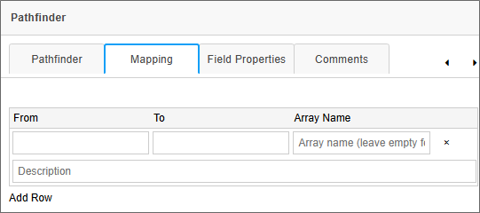
This tab enables you to create a variable and configure the information that Pathfinder will retrieve from the document, specify the field into which the variable value should go, and specify an Array if the value returned contains a list of items.
The From property enables you to create a name for the variable that will be created by Pathfinder when the document is parsed. Below the From property, the Description field enables you to write an AI prompt to describe the data you wish to retrieve from the document. For instance, you might create a property named "word_count" in the From property, then, in the Description property, type, "Return the total word count for this document." In that case, Pathfinder will return a a value like "575" to denote the word count for the document.
The To property enables you to specify the name of a Form field into which you'd like Pathfinder to place the value. If the field you select exists inside an Array, and the prompt you've provided will return a list of values, you can specify the name of the Array in the Array Name property to enable Pathfinder to fill the array with the list of values returned.
By default, the Mapping tab will show a single mapping row, but the Add Row button at the bottom of the tab enables you to add additional rows as desired.
At run-time, this control will appear as a button labeled, Open Pathfinder.
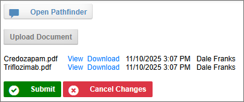
After document attachments are uploaded, you can click the Pathfinder button to open the Pathfinder window. Depending on the mode you select, the Pathfinder panel will appear slightly differently. For Standard mode, the panel will appear as a simple chatbot window. For PLS or IntAIk mode, an additional Summarazation section will appear to enable you to select a document for generating a PLS, or for importing data into the form via IntAIk. In the example below, Pathfinder is displayed in PLS mode.
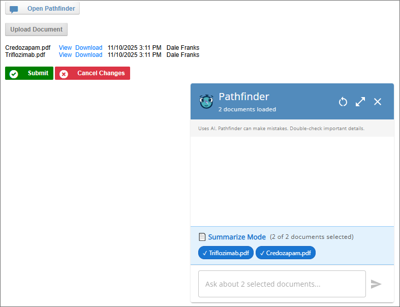
In the Summarize Mode section, you can select or deselect any number of documents by clicking on their name. By default, all documents will be selected.
Once a document or document is selected, you can ask Pathfinder to create a PLS in the chat box at the bottom of the Pathfinder window.
In IntAIk mode, you'll only be allowed to select a single document. Once selected, the PLS will be generated for that document, and the fields you specified on the Mapping tab will be automatically filled by the data extracted by Pathfinder.
This control will place an icon on the Form page.
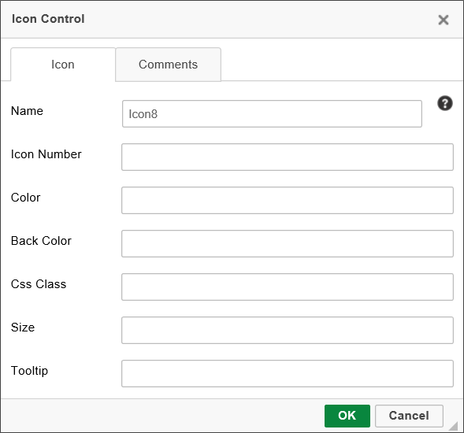
Use the Icon Number property to specify the icon number to display on the Form.
Other properties, such as the icon's Color or Back Color can also be configured to specify the icon's fore color or back color, respectively.
The CSS Class property enables you to specify a CSS class to use for the icon if you've implemented a custom style sheet.
The Size property will specify the size, in pixels, to display the icon. Icons are square, so a single number will specify both the horizontal and vertical dimensions of the icon.
The Tooltip property specifies the tooltip text to display when the user mouses over the icon.
You can view the documentation for all tools available in the Online Form Designer by using the Table of Contents on the upper right corner of the page, or by clicking one of the links below.
Basic Controls: The most commonly-used form design tools.
Input Controls: Controls that are commonly used to collect data, but are a bit less widely used than the basic controls.
Other Input Controls: Additional Input controls, consisting mainly of the different content picker controls.
Actions: These controls enable you to control form actions, like placing buttons, or choosing objects via a picker,
Layout: Controls that are used to govern the control layout for the template, such as tabs and sections.
Responsive Layout: Controls that implement Bootstrap form layout objects.
Arrays: Controls that enable to you create and control arrays on the Form.
Attachments: Controls that enable you to add and show attachments, such as documents or images, to the Form.
Data List (v6.0.100 and higher): Controls that enable the display of tabular data on a Form.
Form Control Tags: System Variables used to add controls to a Form, instead of using the UI controls.